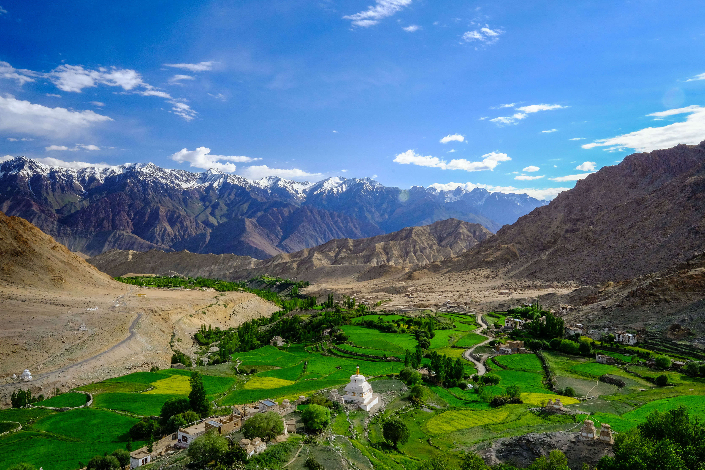
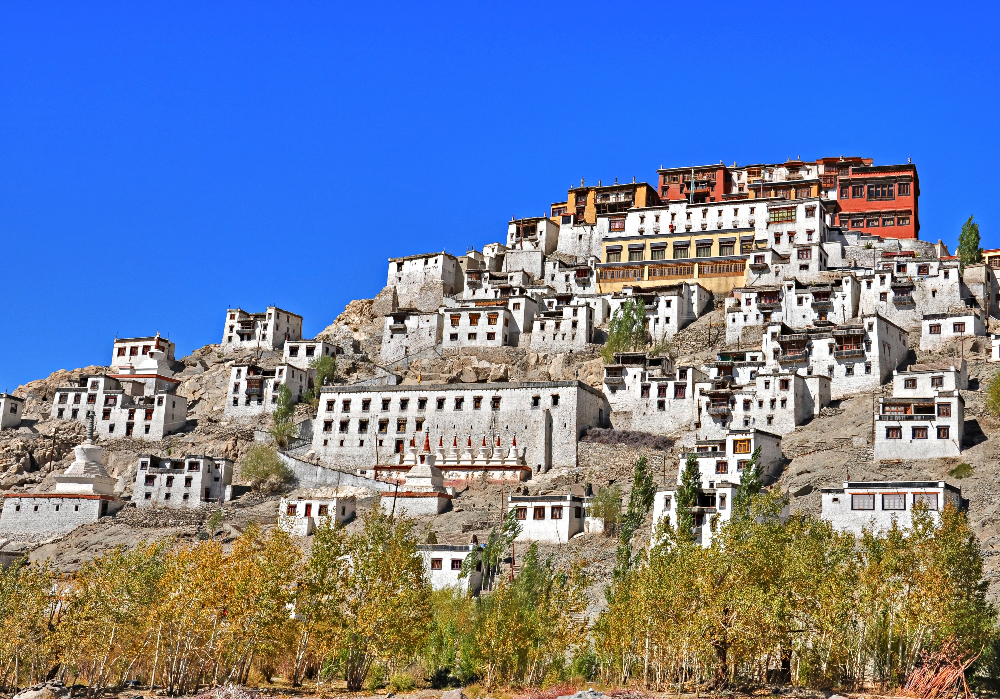
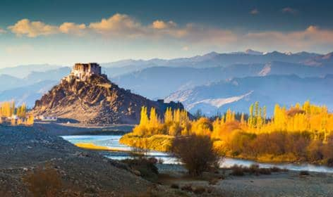

.jpg) Ladakh is a region in the northernmost part of India, bordering Pakistan, China, and Tibet. It is situated at an altitude of 9,800 feet above sea level and is often referred to as the "Roof of the World".
Ladakh is a region in the northernmost part of India, bordering Pakistan, China, and Tibet. It is situated at an altitude of 9,800 feet above sea level and is often referred to as the "Roof of the World".
Ladakh was once an independent kingdom, but in the 19th century, it was incorporated into the princely state of Jammu and Kashmir. In 1947, when India became independent, the state of Jammu and Kashmir was given the option to join either India or Pakistan. The maharaja of Jammu and Kashmir decided to accede to India, and since then, Ladakh has been a part of India.
Ladakh is known for its stunning landscapes, which include snow-capped mountains, deep valleys, and high-altitude deserts. The region is also home to a unique culture, which has been shaped by its location on the ancient Silk Road. The people of Ladakh are predominantly Buddhist, and the region is dotted with monasteries and other Buddhist sites of significance.
Ladakh has become a popular tourist destination in recent years, thanks to its natural beauty, unique culture, and adventure sports opportunities. Visitors can go trekking, mountain biking, river rafting, and even skiing in the region.
If you're planning a trip to India, Ladakh is definitely a destination worth considering. With its stunning landscapes, rich history, and unique culture, it's a place you'll never forget.